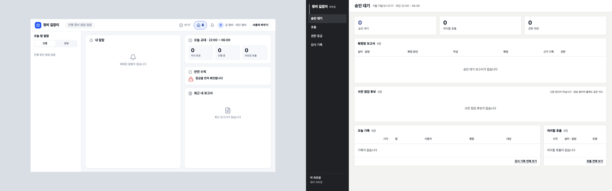
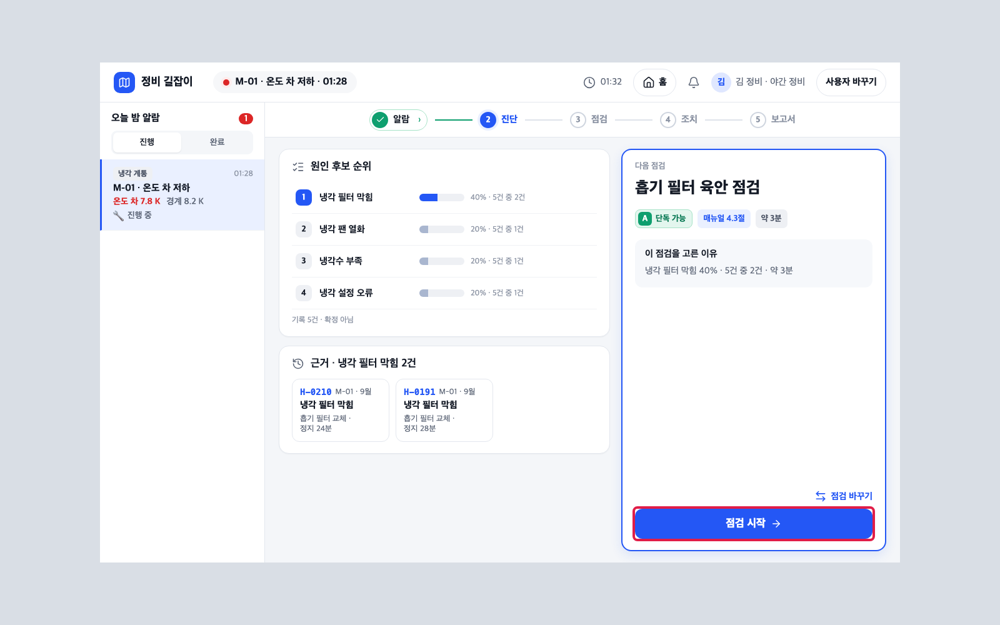
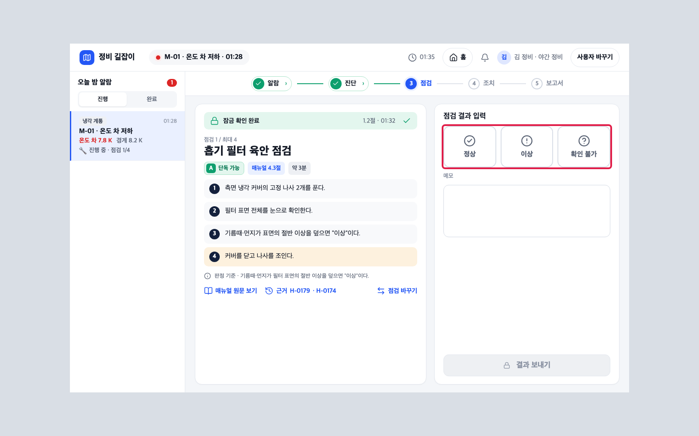
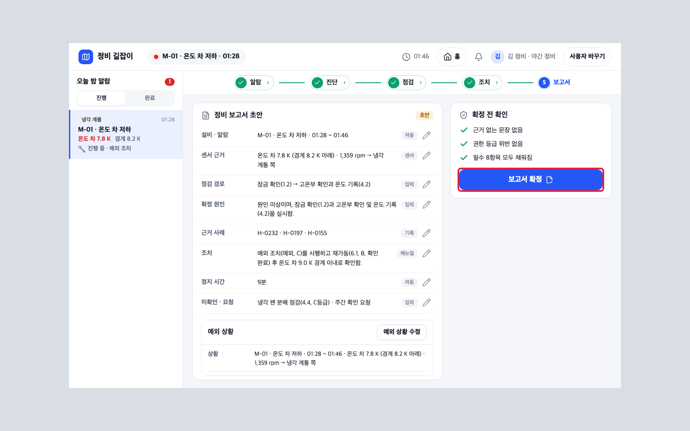
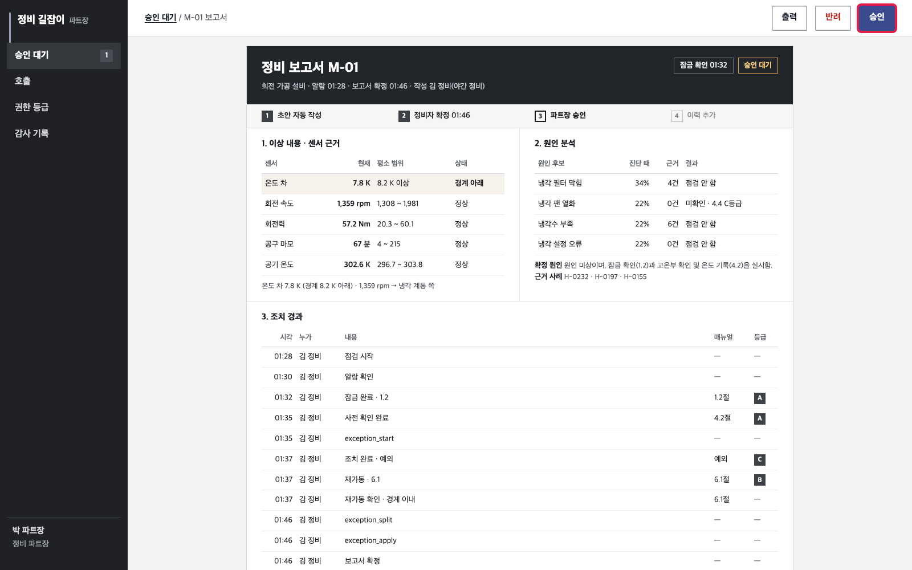
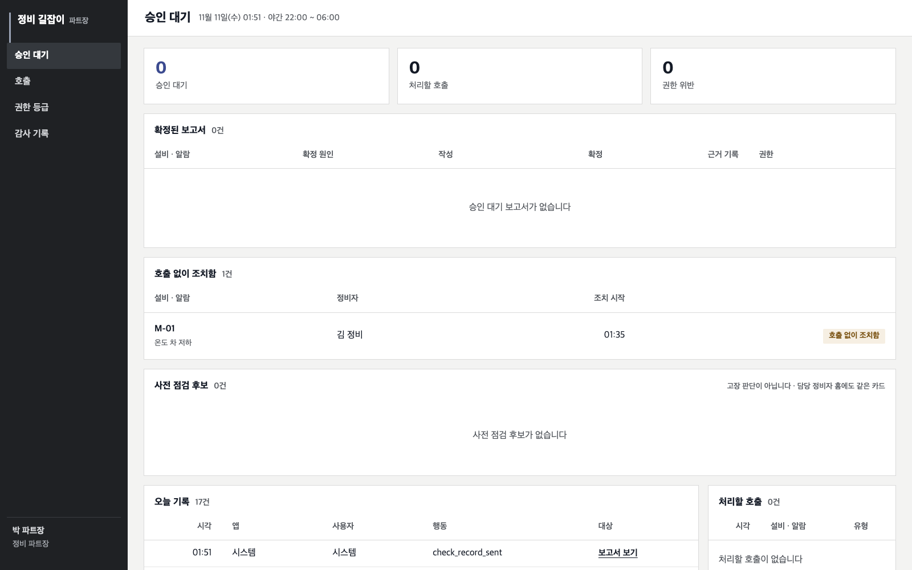

살아있는 정비 길잡이 · 저장소 안내05 / 11
05정비자 앱 · 상급자 앱 쓰기
알람을 받고 점검 · 조치 · 보고서를 쓰는 정비자 앱과, 보고서를 확인 · 승인하는 상급자 앱의 기본 쓰임을 봅니다.
시작 전에
- 02 · 03 끝 · 04 7번까지 끝(정비자 앱의 진단은 운영 버전이 답함)
읽는 법 · 파란 칸 화면에 보이는 단추 · 글자(누름) ·
노란 칸 직접 칠 글 · 검은 상자 터미널 명령(복사해 붙여 넣기) · 빨간 점선 상자 화면 그림(빨간 테 = 누를 곳) · 확인 필요 아직 정해지지 않은 값1로그인 브라우저 두 창
할 일
- 정비자 창 http://127.0.0.1:8081 · ID
tech.kim(시드의 '김 정비') · 비밀번호 = .env의 C1A15_TECH_PASSWORD 값 → 로그인 - 상급자 창(새 창) http://127.0.0.1:8082 · ID
lead.park(시드의 '박 파트장') · 비밀번호 = .env의 C1A15_LEAD_PASSWORD 값 → 로그인
보일 것
정비자 홈(내 알람 · 오늘 교대 · 안전 수칙 · 최근 내 보고서) · 상급자 메뉴(승인 대기 · 호출 · 권한 등급 · 감사 기록)

2알람 띄우기 터미널
할 일
- 설비 알람 한 건(M-01 · M-02 · M-03 · M-13 중)
scripts/app-alarm.sh M-01
보일 것
정비자 홈 '내 알람'에 'M-01 · 온도 차 저하' 카드 · 점검 시작
막히면
진단이 안 뜨고 deployment_not_registered(503) → 문서 04 7번(운영 지정 대본)을 먼저 하고 같은 알람을 다시

3진단 · 점검 정비자 앱
할 일
- 알람 카드 점검 시작 → 먼저 알람 화면(센서 표 · AI 해석)이 나옴 → 진단 보기 → 진단 화면(원인 후보 순위 · 근거 · 다음 점검 · 이 점검을 고른 이유)
- 점검 시작 → → 잠금 확인 잠금 완료 → 사전 확인(4.2) 확인 → 안내 순서대로 점검 → 점검 결과 정상 · 이상 · 확인 불가 중 하나 → 결과 보내기
- 조치 단계 안내를 따라 한 뒤 조치 완료 → 재가동 확인(6.1) 항목 셋을 모두 체크 → 재가동 → 재가동 뒤 값 여전히 밖 · 경계 이내 중 경계 이내 → 보고서 초안
보일 것
위 단계 줄 알람 → 진단 → 점검 → 조치 → 보고서가 차례로 ✓


4보고서 확정 정비자 앱
할 일
- 정비 보고서 초안(AI가 채움)을 확인 · 고침 → 확정 전 확인 세 줄 ✓ → 보고서 확정
보일 것
'보고서를 확정했습니다'

5확인 · 승인 상급자 앱
할 일
- 승인 대기 → 보고서 줄의 검토 → 보고서 내용 확인 → 오른쪽 위 승인 → 확인 창 승인
보일 것
승인 대기 0 · 처리된 줄로 옮겨짐 · 그래프 반영으로 이어짐(문서 04 10번)
알아 둘 것
조치 결과 · 오늘 기록 표의 영어 이름은 앱이 남긴 기록 종류입니다: exception_start = 예외 진행 시작 · exception_split = 예외 글 AI 나눔 · exception_apply = 예외를 보고서에 적용 · check_record_sent = 사람 체크 기록을 배포 서버로 보냄.


다 됐는지
- ☐ 두 창 로그인
- ☐ 알람 → 점검 → 보고서 확정 → 승인 한 번